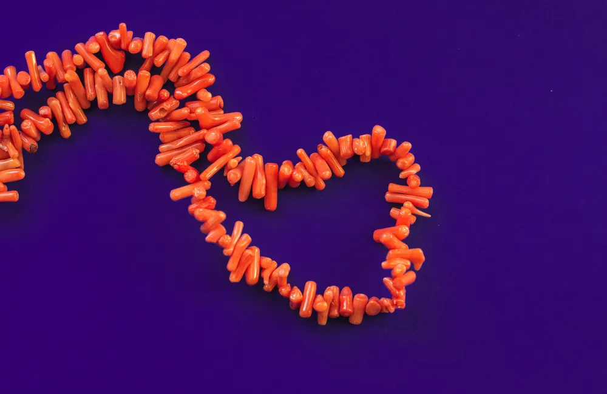

珍珠分級：光澤圓度大小的五維評分
珍珠分級像給寶石打分——光澤是顏值、圓度是身材、珠層是內涵，五維綜合，才知道它值多少。

核心定義
珍珠分級的核心五維：光澤（luster）、圓度（shape）、大小（size）、珠層（nacre thickness）、瑕疵（surface quality）。其中光澤權重最高——「珍珠買亮」是行家鐵律。
光澤分級：極強（鏡面反射清晰銳利）、強（反射清晰）、中（反射柔和模糊）、弱（啞光）。圓度分級：正圓、圓、近圓、橢圓、巴洛克。兩者合起來，就決定了珍珠的基本身價。
特徵與分類
| 維度 | 評估 | 市場意義 |
|---|---|---|
| 光澤 | 鏡面銳利度 | 權重最高 |
| 圓度 | 正圓到巴洛克 | 正圓稀有 |
| 大小 | mm 直徑 | 大者價高 |
| 珠層 | 厚度與均勻 | 影響耐久 |
| 瑕疵 | 表面乾淨度 | 明顯者扣分 |
珠層常被忽略：珠層厚（≥1mm）的珍珠光澤耐久、佩戴多年不啞；珠層薄的珍珠（快速養殖）數年後可能「見核」或啞光——珠層是珍珠的「隱形分數」。瑕疵則看「明顯度與位置」：側面小瑕可接受，正面大瑕重扣。
科學原理
光澤的科學：文石層的緻密規則程度決定反射銳利度——海水珠（低溫慢養）層緻密、鏡面感強；快速養殖的珠層疏鬆、光澤啞。珠層厚度的測量：鑽孔處或斷面可見生長層數。
圓度的科學：有核養殖的珠核形狀決定圓度上限；無核養殖（淡水）的形狀隨機——正圓淡水珠是運氣，正圓海水珠是工藝。大小的科學：貝種決定大小上限（Akoya 小、南洋大）。
鑑定與鑑別方法
- 看光澤：自然光下鏡面反射清晰度
- 看圓度：正圓/圓/近圓/巴洛克
- 量大小：卡尺量直徑 mm
- 查珠層：放大鏡看生長紋/鑽孔處
- 查瑕疵：十倍放大鏡看表面
市場行情與保養建議
行情邏輯：光澤第一、圓度第二、大小第三——一串極強光澤正圓 Akoya 的價格，可以碾壓大而啞的淡水珠。巴洛克珍珠近年因設計風潮行情上漲（「缺陷美」市場化）。
選購建議：先鎖定光澤（極強/強），再求圓度與大小；珠層要問清楚（證書或有信譽商家）；瑕疵看是否影響佩戴正面。五維綜合，價格就有譜。
常見誤區
大而啞的珍珠不如小而亮——光澤是珍珠的靈魂。大小只是五維之一，不是王者。
正圓確實稀有，但巴洛克珍珠有獨立市場——光澤決定「美不美」，圓度決定「正不正」，兩者不能混淆權重。
冷知識
把珍珠靠近字體，能清晰反射字形的就是「極強光澤」——一測便知它的光澤等級。
同樣的貝，養得久珠層就厚——所以「慢養」的珍珠更貴。時間，就是珠層的厚度。
反直覺觀點
光澤權重最高但主觀性強——同一顆珍珠在不同光源下判若兩物。懂行的人，永遠在自然光下看珍珠。
側面小瑕幾乎不扣分、正面大瑕重扣——瑕疵的位置決定殺傷力。鑑定是「哪裡」的問題，不是「多少」的問題。